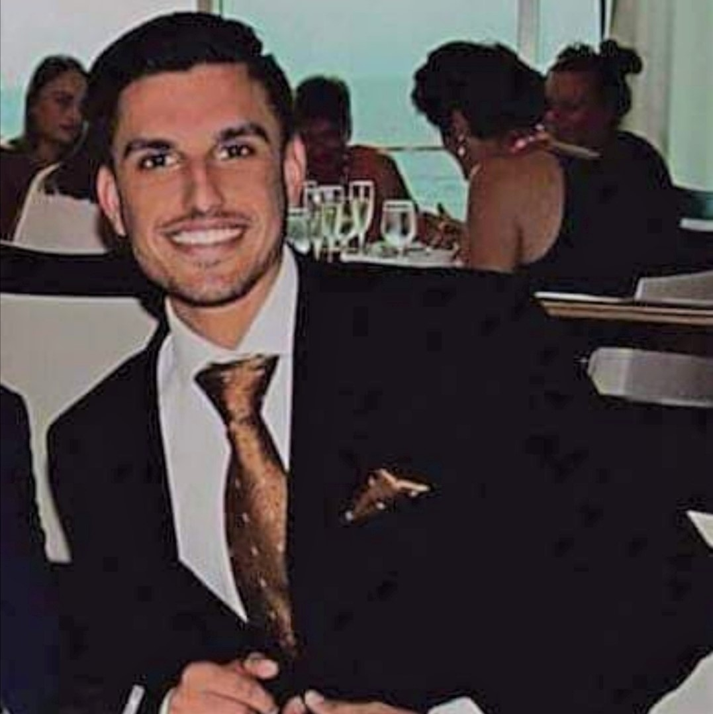
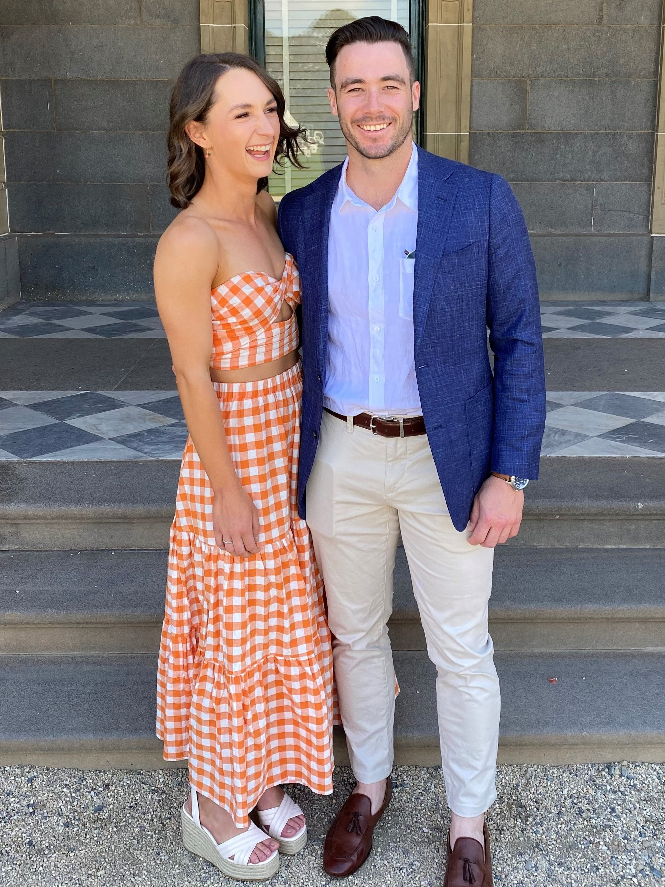

Matthew Bradley  Matthew is a supervisor in the road infrastructure industry, his job has given him many opportunities to travel and develop connections across Australia. Matthew loves 4-wheel-driving to remote beaches with his partner and two dogs. His interest in IT stems from his passion for solving problems and increasing efficiency using the latest development in technology. Matthew’s fields of interest within IT are cyber security and robotics, however he is open to all branches of the industry.
Matthew is a supervisor in the road infrastructure industry, his job has given him many opportunities to travel and develop connections across Australia. Matthew loves 4-wheel-driving to remote beaches with his partner and two dogs. His interest in IT stems from his passion for solving problems and increasing efficiency using the latest development in technology. Matthew’s fields of interest within IT are cyber security and robotics, however he is open to all branches of the industry.
Angadh Bazaad 
From rural NSW, Angadh grew up on a farm and works part-time in his family’s business. Angadh’s passions include sports, video games and trying and testing new foods. He loves all animals and keeps pets to care for including two dogs and a parrot. Angadh’s IT experience is predominantly as a consumer, loving video games and their collaborative nature, he has also dabbled in HTML coding through his school years and is now looking to expand upon and broaden his IT knowledge. His interests in the IT sphere include the broad spectrum of knowledge, but specifically is looking towards the management of systems inside the STEM field.
Maddison Davis  Maddison is a Wellbeing Co-Ordinator in an aged care facility in NSW. Her leadership ability led her to be part of a team enforcing the Consumer Directed Care Model throughout her work. Maddison’s hobbies include travel to remote regions to camp and bushwalk, as well as spending time in mindful pursuits such as reading, completing puzzles and watching documentaries. Maddison’s background in IT stems from within her work as an aged care provider. Taking charge of her
workplace’s communications platform and streamlining the system to increase efficiency. Maddison’s fields of interest within IT are heavily towards tech, gadgets, and robotics. Madison’s love of sci-fi has influenced her desire to understand and create the future of technology.
Maddison is a Wellbeing Co-Ordinator in an aged care facility in NSW. Her leadership ability led her to be part of a team enforcing the Consumer Directed Care Model throughout her work. Maddison’s hobbies include travel to remote regions to camp and bushwalk, as well as spending time in mindful pursuits such as reading, completing puzzles and watching documentaries. Maddison’s background in IT stems from within her work as an aged care provider. Taking charge of her
workplace’s communications platform and streamlining the system to increase efficiency. Maddison’s fields of interest within IT are heavily towards tech, gadgets, and robotics. Madison’s love of sci-fi has influenced her desire to understand and create the future of technology.
Beau Foster  Beau works construction within the post-tensioning industry, a hard worker with an eye on project management and training in Outdoor Recreation. Beau is an avid basketballer, competing at high levels through his junior years and up until he started his young family in NSW. Beau’s hobbies include spending time with his family and playing PC games in his spare time. Beau’s background in IT comes as being a consumer of video games in his youth and a love of tinkering with the internal working of PCs, this leading to an exploration of various software and coding languages. Beau is heavily interested in software design and its implementation across the life of various projects.
Beau works construction within the post-tensioning industry, a hard worker with an eye on project management and training in Outdoor Recreation. Beau is an avid basketballer, competing at high levels through his junior years and up until he started his young family in NSW. Beau’s hobbies include spending time with his family and playing PC games in his spare time. Beau’s background in IT comes as being a consumer of video games in his youth and a love of tinkering with the internal working of PCs, this leading to an exploration of various software and coding languages. Beau is heavily interested in software design and its implementation across the life of various projects.
Cameron Mcnab  Cameron is studying alongside his full-time work as an electrician. Cameron is an animal lover and cares for his veritable zoo with love. Cameron enjoys board and video games, camping, motorbike riding and bushwalking with his dogs. Cameron’s IT experience has been from a lifelong passion for tech. After developing a video game portfolio at school, Cameron enrolled into the AIE. Now he is looking to expand on his passion with formal training in IT. His areas of interest include software engineering and software architecture, using remote work to develop products for clients.
Cameron is studying alongside his full-time work as an electrician. Cameron is an animal lover and cares for his veritable zoo with love. Cameron enjoys board and video games, camping, motorbike riding and bushwalking with his dogs. Cameron’s IT experience has been from a lifelong passion for tech. After developing a video game portfolio at school, Cameron enrolled into the AIE. Now he is looking to expand on his passion with formal training in IT. His areas of interest include software engineering and software architecture, using remote work to develop products for clients.
Kieran Symon
Kieran is an Electrician by trade undergoing study in the Bachelor of Information Technology to expand the scope of his work beyond construction, install and maintenance. When not working or studying, Kieran is an avid sportsman playing both field hockey and cricket, and loves getting away to the south coast for a day in the surf. Kieran’s IT interests are broad spanning from video games to network engineering, of particular emphasis however is the ever-expanding Internet of Things and Building Management Systems. Kieran’s technical IT experience is through his work as an electrician, installing and maintaining small networks and their backbone equipment, his experience of the rest of the IT sphere is as a consumer of software and gadgets.
(I was thinking we can have a page set up for each member of the team with a link at the top including your persaonal results from the 16 personalites etc)
| Team Member |
Myers-Briggs (NERIS, 2022) |
Big 5 Personalities (Lim, 2020) |
Learning Styles (Sphero, 2020) |
| Beau Foster |
Architect:- Big Picture
- Logical
- Order
- Solo work
|
- Openness – 81%
- Conscientiousness – 75%
- Extraversion – 37.5%
- Agreeableness – 65%
- Neuroticism – 27%
|
Kinesthetic:- Hands on.
- Engage all senses.
|
| Cameron McNab |
Mediator:- Intuitive
- Reserved
- Emotional decision making
- Keep option open
|
- Openness – 90%
- Conscientiousness – 17%
- Extraversion – 75%
- Agreeableness – 33%
- Neuroticism – 67%
|
Multimodal: - Able to learn from multiple styles.
- Versatile.
|
| Matthew Bradley |
Assertive Executive: - Traditional
- Leaders
- High standards
- Honest
|
- Openness – 27%
- Conscientiousness – 50%
- Extraversion – 46%
- Agreeableness – 79%
- Neuroticism – 42%
|
Kinesthetic: - Hands on.
- Engage all senses.
|
| Madison Davis |
Consul:- Kind and Loyal
- Organized
- Conscientious
- Emotionally Intelligent
|
- Openness – 81%
- Conscientiousness – 92%
- Extraversion – 69%
- Agreeableness – 81%
- Neuroticism – 37.5%
|
Auditory: - Listening to information.
- Group setting with vocal collaboration.
|
| Angadh Bazaad |
Protagonist: - Extraverted
- Self-critical
- Leader by consensus
- Charitable
|
- Openness – 87.5%
- Conscientiousness – 73%
- Extraversion – 75%
- Agreeableness – 75%
- Neuroticism – 29%
|
Kinesthetic: - Hands on.
- Engage all senses.
|
| Debater: |
Forward thinking - Devil’s advocate
- Conversational
- Exploring of ideas
- Charitable
|
- Openness – 85%
- Conscientiousness – 40%
- Extraversion – 62.5%
- Agreeableness – 52%
- Neuroticism – 60%
|
Visual: - Graphic depictions.
- Clear images of informational hierarchy.
|
The breakdown of our teams’ personalities and tendencies will be a great help in the smooth operation of the IT Mob. With the ability for each person to understand where the others are coming from, especially in this type of group work with limited contact and none face-to-face, any added information is helpful in reducing conflict and misunderstandings. Our team has a very good spread of personalities with very few clashes, and this will be an asset to our performance. Along with a few leadership type personalities we also contain an analytical-type architect and three mediator/emotional based personality type to keep the group running smoothly.
Our group also has a wide range of learning styles, this is a especially advantageous in the circumstances we are currently under as the variation in effective styles will allow our group to attain as much information as possible.
|
| Beau Foster |
Cameron McNab |
Matthew Bradley |
Madison Davis |
Angadh Bazaad |
Kieran Symons |
| Job Title |
Software Architect |
Software Developer |
Software Engineer |
Robotics (Mechatronics) |
Project Manager |
Principal Network Engineer |
| Overview (Seek 2021) |
‘Computer programmer or software developer who determines which processes and technologies the development team should use.’ |
‘Creates computer software and applications.’ |
‘Design, develop and maintain software systems.’ |
‘Design and build robots and robotic systems.’ |
‘Organizes, directs, controls and coordinate IT projects.’ |
‘Develop, plan, and implement computer network and system services and trouble shoot related problems.’ |
| Skills |
- Software Architecture and development experience.
- Programming Experience
- Attention to detail.
- Research and trend analyzing ability.
- Communication
|
- Programming in various languages.
- General technical literacy.
- Written and oral communication skills.
- Trouble shooting experience
|
- Programming in various languages.
- Technical literacy.
- Trouble shooting experience.
- Communication ability.
|
- Multi-language programming.
- Mechanical and Mechatronic experience.
- Robotics related technologies.
- Troubleshooting.
- Communication.
|
- Communication skills.
- Relationship management skills.
- Business/ budget skills
- Experience delivering IT infrastructure projects.
|
- CISCO experience
- Security and network experience.
- Trouble shooting experience.
- Communication skills.
|
| Education |
- Bachelor’s degree in Computer Science.
- Industry programming experience.
|
- Tertiary Education in Computer Science related fields
- Industry related experience.
|
- Bachelor’s degree in Computer Science or Software Engineering.
- Industry Experience (e.g., Freelancing or Hobby Projects.
|
- Bachelor’s Degree (Mechatronics)
- Industry internship
- Membership to relevant association
|
- Tertiary/ Vocational education (Project/ Construction Management)
- Technical Experience.
- Industry Certificate.
|
- Bachelor’s degree in Computer Science related fields.
- Technical Experience
- Industry Certifications
|
| Average Salary |
$130,000 - $160,000 |
$70,000 - $100,000 |
$130,000 |
$70,000 - $100,000 |
$75,000 - $110,000 |
$60000 - $100,000 |
| Outlook (Seek 2021) |
30.0% 5 Year Projected Job Growth |
30.0% 5 Year Projected Job Growth |
30.0% 5 Year Projected Job Growth |
15.9% 5 Year Projected Job Growth |
8.3% 5 Year Projected Job Growth |
30.4% 5 Year Projected Job Growth |
Various – Seek Career Advice (2021), Various - Indeed Job Search (2021) and Labour Market Information Portal (2021)
In the table above there are several worthy data points to highlight.